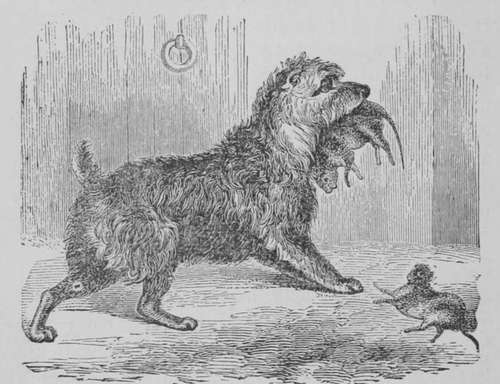

Scotch Terrier
Description
This section is from the book "Breeding, Training, Management, Diseases Of Dogs", by Francis Butler. Also available from Amazon: Breeding, training, management, diseases.
Scotch Terrier
Small, rough and whiskery, and of sandy hue Though sometimes gray, and oft' of dusky blue ; Clear, bright, inquisitive, sagacious eye, Moustachiod lip, with brows deep shaded by ; Brave, hardy, vigilant and ever gay, First famed on Scotia's lofty hills, they say ; Kills fox and weasel, skunk, racoon and cat, Rabbit or squirrel, hedgehog, mouse or rat j Onward he rushes, with impetuous ire, His wiry pelt dares bramble, bush and briar ; Through matted brakes, he threads his thorny way,
Digs in the earth, or tempts the flood for prey ; Not swift of limb, the fleeter game to trace, Attacks the foe, within his hiding place ; Of noxious vermin rids the house and store— Inspects each corner, searches every floor ; When cunning Renard, pressed by boisterous hounds,
Rushes to earth and thus the pack confounds, The valiant Scot assails him in his den, All gore-begrimmed. he drags him forth again. His coarse exterior, some may chance contemn, Others his blunt expression may condemn ; Yet none his virtues ever dare deny ; His merits rigid scrutiny defy.
Scotch Terrier.
Fine bred pets are very easily unnerved, especially when in a delicate state of health ; quietness is as essential to their recovery as to a human being in a similar condition. Do not presume that all fits have any connexion with distemper. They often arise from a naturally weak and nervous temperament, and oftener still from indigestion and worms. The latter may generally be known by a tightness of the belly, (especially in puppies), irregularity of stool, sometimes loose and sometimes the reverse, jumping during sleep, a rumbling noise in the inside ; by the animal dragging himself along on his hind parts, by his suddenly yelping and changing his position, and by the oft renewal of his yelling. These symptoms have seldom anything to do with Distemper, though they may sometimes co-exist with it. The worms should be got rid of first and Distemper afterwards, should both be visibly marked together. Worms, in young puppies are often mistaken for Distemper. The looseness arising from worms should not be checked, till the worms are expelled by medicine. Stoppage is also caused by worms, by solid knots of them blockading the intestines. As the worm medicines I recommend under the head of " Worms," are not calculated to injure the constitution of the most delicate, it may he safely administered whenever worms are suspected. Dogs have been inoculated for Distemper, but I have not heard of any benefits arising from it. In raising Sporting-Dogs, my plan is to introduce them to the disease, when they are in a healthy state, but not when the disease has assumed a virulent form. I think the most favorable time to be just after they have finished shedding their teeth. They arc then generally in a healthy condition, and on that account the disease seldom proves fatal; to say nothing of our being fully prepared to treat our patients accordingly. It is very rare indeed for an animal to contract the disease twice, though it may often return, if it has not been judiciously or thoroughly eradicated. I would advise those then, who would raise Pointers or Setters, to force them into Distemper at a suitable period, as it is more particularly trying to lose a sporting-dog, after the trouble and expense of raising and breaking ; to which maybe added the blighting of our long cherished hopes of an invaluable field companion ; but on no account expose him to the Disease, till he present his new sot of teeth, as they are often totally ruin ed by its effects ; not only the organs of mastication, but his breath, his health and hia beauty. Setters, Pointers, Greyhounds and Newfoundlands are more severely affected by Distemper, than the ordinary breeds of Dogs. Their food in early life should not be too gross, neither should the stomach be overcharged ; for although, as I have before observed, there be no antidote against Distemper, yet its attacks may be mitigated by attending to the general health of our favorites. We must first be careful to procure healthy stock, keep them on wholesome food, neither stuff nor starve them, keep their ears warm, their noses cool, and their gums rosy ; neither compel them to be hot or cold, wet or exposed.
In Distemper, the matting up of the eyes should be cautiously guarded against; by often washing with warm milk and rubbing a little sweet oil on the lids. When the animal cannot see, his trouble is heightened, and the whole nervous system thereby affected, and as dogs are very sensible and sensitive animals, endowed with almost human intellect, we must remember that whatever tends to cheer and enliven them, has a happy effect on their physical ailments. When the heaviness of the head is not relieved by aperient medicines, the crown of the head may be shaved and a fly-blister placed thereon ; a little blood may be taken from the ears, or the head may be often bathed with cold water and carefully dried off. However, I do not recommend bleeding, except in extreme cases. Instead of a seton, so much recommended by Dogologists, I prefer passing a sharp red-hot iron about the size of a lead pencil through the skin at the back of the neck, leaving the wound to fester ; it often has a happy effect, in relieving the head and carrying off the humors. It may be allowed to heal of its own accord and reopened, if requisite. If any twitching or shaking of the limbs should come on, it should be immediately taken in hand, and every means used to keep up the circulation, by rubbing in a strong liniment, composed of spirits of turpentine, alcohol, oil and laudanum, or if nothing be used, the friction alone will be serviceable. " Butler's Mange Liniment" has been used with great effect, in such cases. In this state, especially, the animal should not be exposed to any kind of damp ; the bowels should be kept in a proper state, the food should be light, he should be carefully supplied with fresh water and a comfortable bed. If the weather be favorable, he should have as much exercise as he can conveniently bear. These nervous twitchings, if not attended to in time, are difficult to cure, and even with all our precautions and attentions, are always to be dreaded. When they neither yield to care, medicine, diet or friction, the poor sufferer had better be put out of his misery. I have had valuable patients lying helpless, for many months, long after the whole hind parts were completely paralyzed and lifeless, and have at last been induced to destroy them by drowning, the only method of proving whether their limbs might ever regain their motion, in the agonies of dissolution ; but the sufferers have invariably sunk, unweighted to the bottom. -Light twitchings happen to dogs occasionally, when they have no Distemper, and often depart without help. For this I have found nothing so good as rubbing and warmth. Mange and other cutaneous eruptions are considered by some writers as forerunners of Distemper. Distempered animals often have postules on the bowels principally, but they have not the appearance of ordinary mange. When these postules break out in Distemper, it is far from a favorable symptom. They should be treated however, as Mange, and great care should be taken of the sick one, as he is then more liable to take cold, than at any other period. Distemper is more apt to be fatal with animals fed on a rank meat diet, but do not suppose that any food is an absolute preventive ; I have seen hundreds die, who never tasted anything but cracker and milk, and many indeed, who never lived long enough to eat anything at all. Dogs are very rarely blinded by Distemper ; the bluish film which often covers the eye, naturally disappears, as the animal recovers, and it is far better let alone, with the exception of gently washing with warm milk and water. If a dog be taken with Distemper, he should be removed from his companions, to avoid infection, though I have found this to be no positive guarantee, as the causes originating it in the one, may equally operate on another, and Distemper maybe lurking in the system for weeks, before it makes a decided appearance. I could enumerate a host of Distemper remedies, but as ray object is to simplify, J shall not enlarge on their respective virtues.
Continue to: